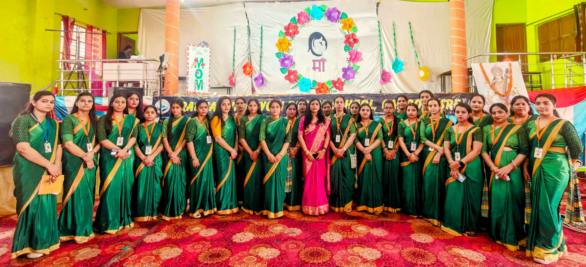
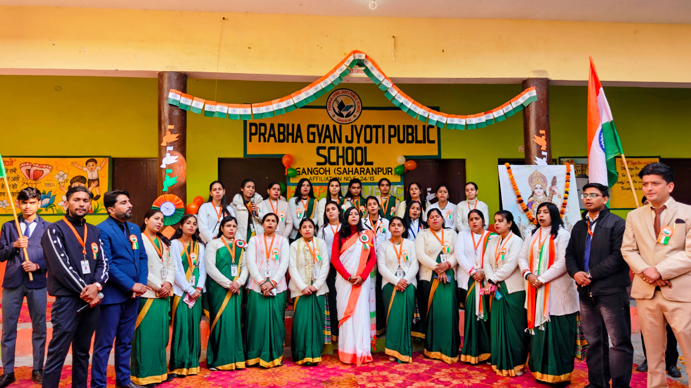

Our Faculty
Dedicated teachers shaping confident learners.
Our faculty is well qualified, sincere, caring, and committed to the academic and personal growth of every child.
Teaching Team
Guidance with care, discipline, and responsibility.

The faculty of Prabha Gyan Jyoti Public School, Gangoh works with patience, regularity, and a student-first approach. Teachers focus on concept clarity, classroom discipline, notebook checking, oral practice, handwriting, reading habits, and confidence-building activities.
Every child receives encouragement to ask questions, participate in activities, complete homework, and improve step by step. The school believes that good teachers do more than teach lessons; they build habits, values, manners, and self-belief.